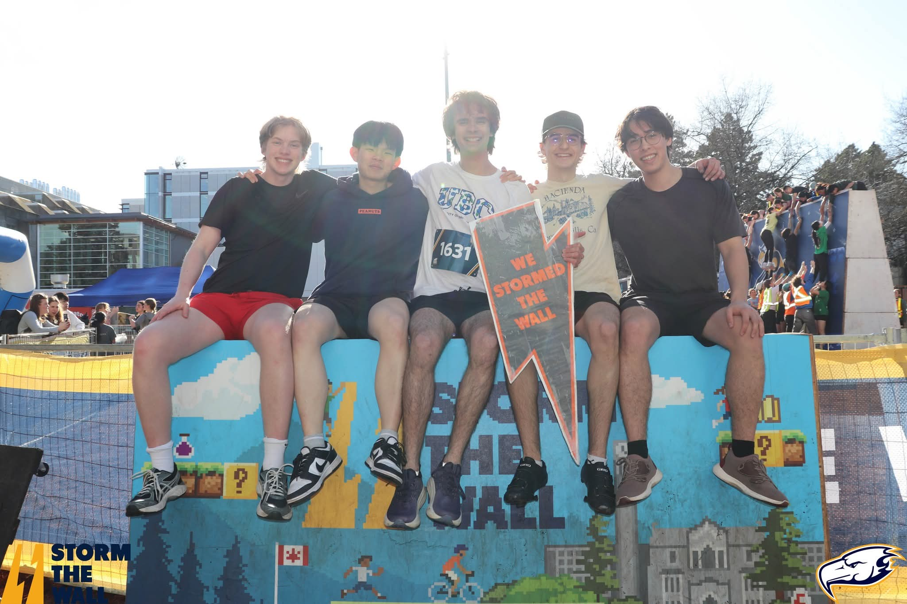
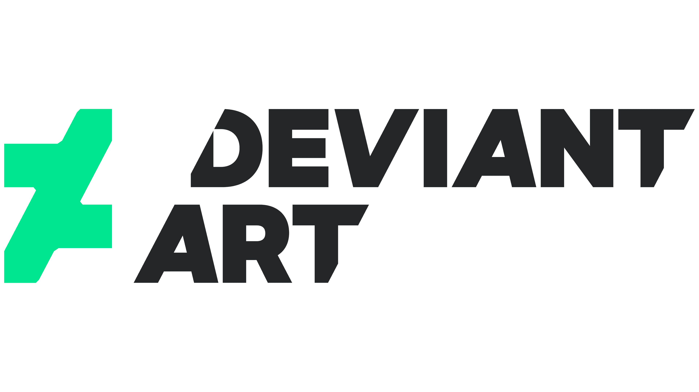
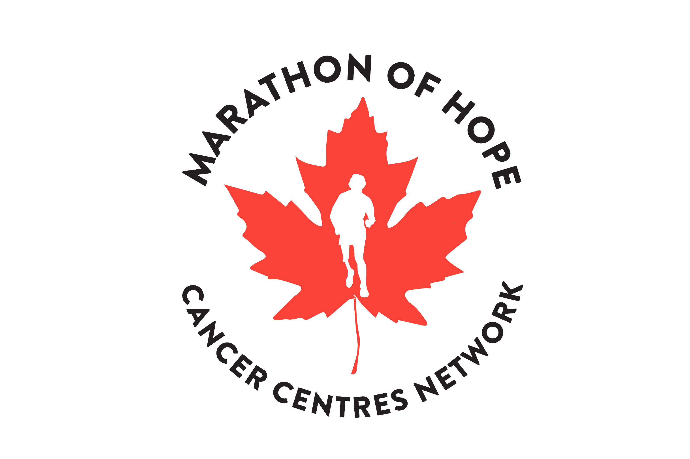
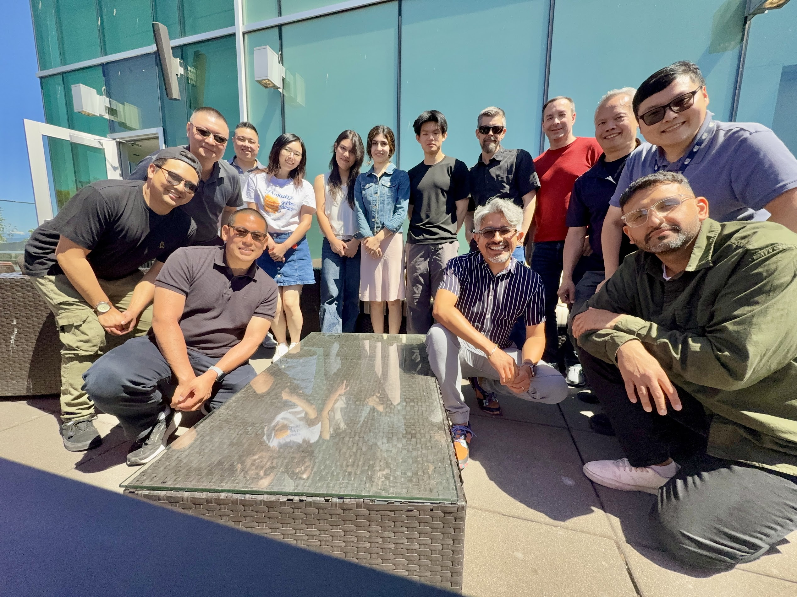
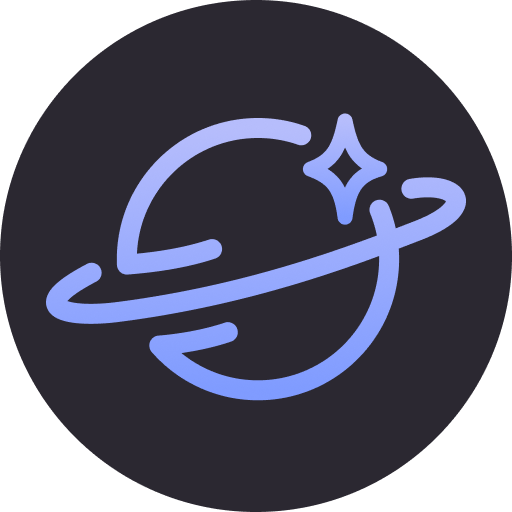

A working record of what I've built
Alvin Tsui
Software engineer, sometimes bioinformatics researcher, or student. Scroll sideways to start.


DeviantArt (Wix.com)
Data / ML Infrastructure Intern
Four months rebuilding production data infrastructure for a live analytics platform. I designed a zero-downtime migration off three legacy databases, built a distributed-locking system for concurrent data ingestion, and worked on ML inference pipelines for image embeddings.
Michael Smith Laboratories
Bioinformatics Co-op
Eight months inside a national cancer research initiative, building an unsupervised clustering pipeline to validate tumor subtype classifications from gene expression data. The analysis surfaced a real sample-mislabeling issue. I also owned the lab's data automation and cloud infrastructure, and trained the team on our analytics platform.


UBC Faculty of Medicine
Software Engineer / Business Analyst Steward
Designed and built a database-backed auditing tool that cut response times nearly in half. I worked directly with stakeholders to translate real administrative workflows into working software, balancing technical architecture with requirements gathering across developers, design, and research teams.

UBC Launchpad
Sponsorships Coordinator
Sponsorships coordinator for UBC's largest software engineering club. I manage sponsor relationships end-to-end (e.g sourcing, pitching, and building custom packages) and translating between what sponsors want and what the club can realistically deliver.
UBC Orbit (ALEASAT)
Full-Stack Developer
Full-stack developer on a student satellite design team, working across backend infrastructure and orbital mechanics. I've built account/API systems, debugged Kubernetes deployment failures, and automated spacecraft lifetime compliance analysis using aerospace simulation tools.


Athlekin
An Android fitness tracker built solo, from local exercise logging to cloud-synced workout history. The standout feature: autofill and plateau detection that reads past performance to suggest overload strategies, plus Google Calendar integration for scheduling workouts around real availability. A crash course in Firebase quirks and Android testing along the way.
GCompanion
A full-stack workout tracker built from scratch, then rebuilt — React and a custom Node/Express/MongoDB backend, later migrated toward Next.js and Redux as the app grew. Along the way I added live workout-sharing over WebSockets and learned the hard way about CORS, cookies, and cross-origin auth.
That's the story so far.
If any of it's relevant to what you're working on, I'd like to hear about it.
Get in touch